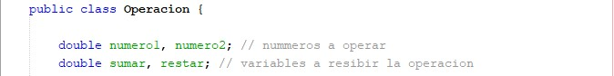
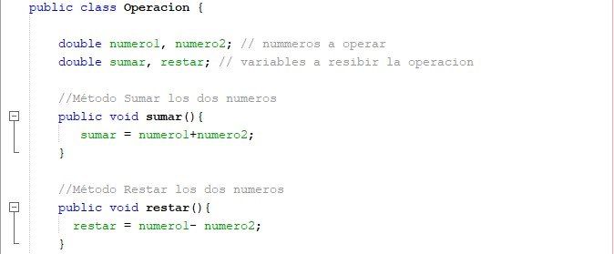
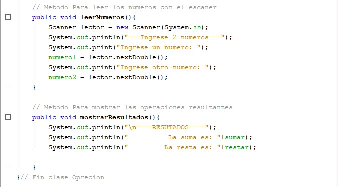

Pasos |
Imágen |
Descripcion |
|---|---|---|
| 1 |
Primero se importa lo que necesitemos, en este caso el paquete donde está nuestra clase y el escaner que usaremos para pedir valores más adelante. |
|
| 2 |
 | Se crea clase Operacion indicando que esta clase es para operaciones. Se crean variales de los numeros que se van a pedir donde seran los atributos de la clase operacioi y variables que almacenaran la operacion que realizaran los métodos más adelante |
| 3 |
 | Dentro de la clase se crean los métodos sumar y restar y se procede a escribir la operacion almacendandolo en la variable definida previamente dependiendo del método. |
| 4 |
 | En este caso se le agregaran 2 métodos mas: leer numeros y mostrar numeros. leer numeros nos pedira ingresar 2 números y leerlos con el escaner declarado como lector. Y mostrar resultado imprimirá en la salida los resultados de las operaciones indicadas almacenadas en las variables correspondientes. |
| 5 |
Luego creamos otra clase que será nuestro punto de inicio o de partida, que hará funcionar el programa. En este caso la clase se llama Main. |
|
| 6 |
En el método main Crearemos un objeto de nuestra calse Operacion. Escribiendo primero la clase donde queremos el objeto, segundo el nombre de nuestro objeto igual a nuevo objeto de la clase Operacion |
|
| 7 |
Como último paso para poder hacer que el objeto haga los métodos que realizamos, se indica el objeto que se creó seguido de uno de los métodos de la clase donde se encuntra. En este caso primero leemos los numeros luego los sumas y restamos para terminar con el resultado en saldida. |